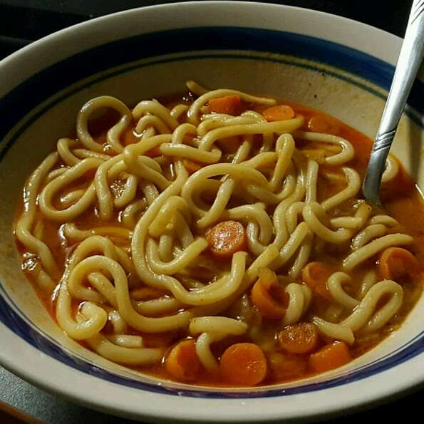

Curry Udon

Description
Ingredients
- 3 carrots, cut into bite-size pieces
- 1 small onion, cut into bite-size pieces
- 3 tablespoons water
- ¼ cup vegetable oil
- ½ cup all-purpose flour
- 2 tablespoons all-purpose flour
- 5 cups hot vegetable stock
- ¼ cup soy sauce
- 2 teaspoons maple syrup
Steps
- Place carrots and onion in a microwave-safe bowl; add water. Cover and microwave on high until tender, about 4 minutes.
- Heat oil in a large pot over medium heat. Whisk in 1/2 cup plus 2 tablespoons flour to form a paste, 1 to 2 minutes.
Stir in curry powder. Whisk in hot vegetable stock slowly until incorporated and smooth, about 3 minutes. Stir steamed
carrots and onion, soy sauce, and maple syrup into the curry broth.
- Bring a large pot of water to a boil. Cook udon noodles in boiling water, stirring occasionally, until noodles are
tender yet firm to the bite, 10 to 12 minutes. Drain. Add noodles to curry broth.